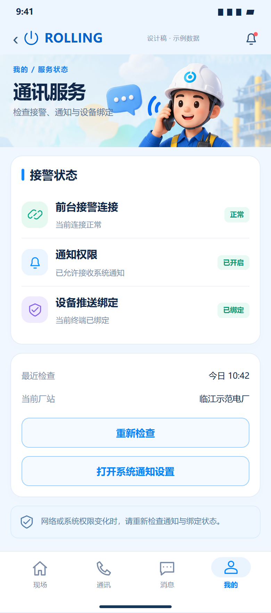

通知机制已有代码，UI不完整；推送到达与锁屏接警仍需真机证据。
相同 · 已有基础
前台接警连接、通知授权、当前状态、开启通知和系统设置入口已有。
不同 · UI与场景
当前只有紧凑状态卡；缺设计三行状态、绑定独立徽标、最近检查、当前厂站、重新检查按钮。
01 / 先看 UI
两图显示宽度统一；设计390px与当前360逻辑宽的画布不同。各图可独立滚动到底，点击“原图”放大。


使用既有组件截图；业务数据为示例。
02 / 逐项核对功能与小交互
入口：我的 → 查看状态 · 当前形态：子页面
| 编号 | 部位 | 设计要求 | 当前UI | 功能结论 | 下一步 |
|---|---|---|---|---|---|
| 33-01 | 顶部 | 通讯服务头图和Logo | 当前只有返回与标题 | UI缺口 | 补统一子页头部，保留Logo |
| 33-02 | 前台连接 | 连接状态及说明 | 当前badge+status文本 | 已有代码：WebSocket连接/重试 | 拆出明确状态行，失败不宣称正常 |
| 33-03 | 通知授权 | 系统权限已开启/未开启 | 已有状态badge | 已有代码：Permission.notification | 系统真实权限为准，截图测试未启动推送 |
| 33-04 | 推送绑定 | 独立已绑定/待重试 | 当前主要综合status文字，非独立状态行 | 部分：registered/configured与绑定逻辑存在 | 单列绑定、配置不足、失败原因 |
| 33-05 | 最近检查 | 检查时间 | 当前没有 | 缺失 | 记录真实检查完成时间，勿显示当前时间冒充检查 |
| 33-06 | 当前厂站 | 服务所处厂站 | 当前子卡未单列 | 部分：session有厂站 | 补当前作用域避免切站误解 |
| 33-07 | 重新检查 | 统一按钮 | 当前只有权限申请和条件重试绑定 | 缺失：一次性重新检查入口 | 检查连接/权限/绑定分别返回结果 |
| 33-08 | 系统设置 | 打开通知设置 | 当前openAppSettings打开应用设置 | 部分：可进入系统设置，未必直接到通知子页 | 文案准确或改平台通知设置深链，返回刷新状态 |
| 33-09 | 实际到达 | 前台/后台/锁屏接警 | 代码有JPush与前台WS | 待实测：注册成功不等于设备已收到 | 按前台后台锁屏逐一联调，记录设备/时间/事件ID |
源码依据
mine_page.dart:739；notifications.dart:156,248,257,415,520
链接为随报告保存的带行号快照；行号对应分析时源码。以函数和字段共同定位，不能将请求代码视为执行成功证据。